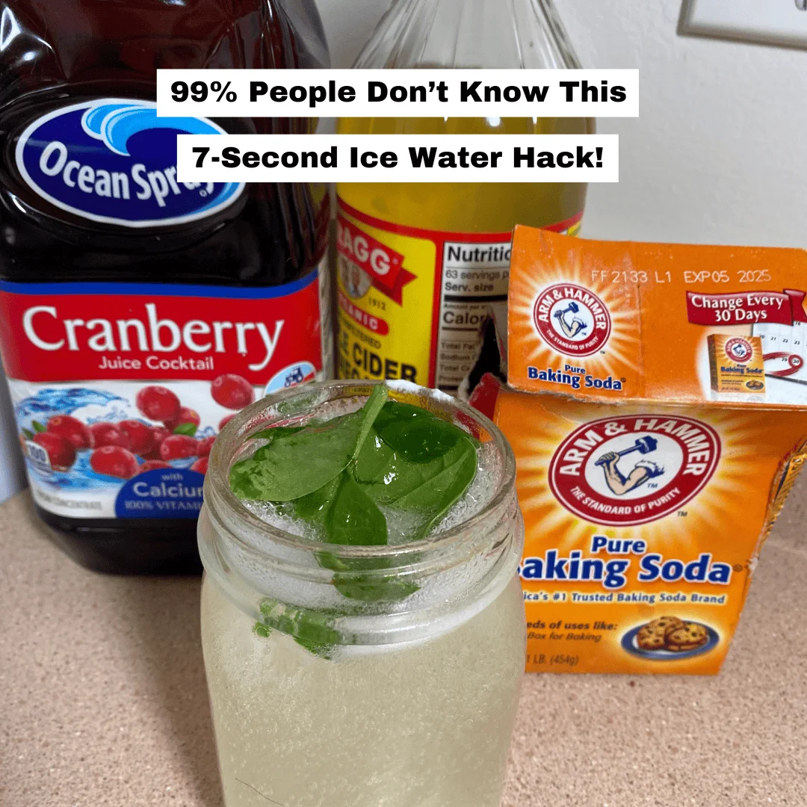

“7-Second Ice Water Hack ”
Transformed My Life
“Hi, I'm Karen and I'm 59 years old.
I am sharing my story here because I am really proud of the fact that I was able to lose 63 lbs with this Simple “7-Second Ice Water Hack” .
However it wasn't always this way for me. After starting a family 20 years ago I've struggled with my weight continuously…
I knew having a child would leave me with a few extra pounds…
But I didn't realize how hard it would be to stay in shape as a mother… I mean even for a tall woman like me…
It only dawned on me recently how bad things were when I was told my by Doctor that my blood sugar is too high and that I might develop diabetes…
Given the less-than-active lifestyle I had, it shouldn't have been a big surprise.
The news was a wake-up call, as my mother had her left foot amputated 3 years before… and it made me really scared of course.
And when I thought about all the health problems it could lead to, I became terrified.
I started making small changes; reducing my food portion size, trying to cut out the snacks, and even tried a few workouts.
But when the current global situation came along, I got so stressed and worried –I began to comfort eat.
I know this was the worst thing I could have done, but in my head, I kept justifying it.
Certain things were beyond my control after all. Plus, what else could I do?
Gyms were expensive, and I never enjoyed working out in the park as everyone was always staring at me…
A friend of mine told me about how she dropped 3 dress sizes by doing this
7-Second Ice Water Hack
daily, but I didn't believe her!

But then I came across a story on my news feed about a woman who was a little older than me and had lost over 100 lbs with the same
7-Second Ice Water Hack
.
So, I decided to get the information and start the
“7-Second Ice Water Hack
”
every day!
But just to be sure, I managed to get a video call with my Doctor…
I shared the information and ingredients with him and he told me it sounded perfect for me to try.
And that's exactly what I did!
The first thing I noticed was the fact that I became full of energy and I was able to control my urges to comfort eat.
In fact, after the 7-Second Morning Ritual, I was not hungry anymore.
Within a short period of time, I was able to lose almost 3 inches off my waistline without a strict diet or exercises
.
After one week of using 7-Second Ice Water Hack I was surprised at the dramatic results. My energy level was up, and I wasn't even hungry.
I honestly felt fantastic.
And I didn't even change anything about my daily routine. On Day 7 I got on the scale and had to do a double-take. I had already lost a pant size, really? I wanted to take a “wait &see” approach. But it sure was looking up!
After two weeks of using 7-Second Ice Water Hack , I started the week off with even more energy and was actually sleeping more soundly than before. I was no longer waking up during the night and tossing and turning because my body was actually able to relax (I believe this is a result of burning body fat instead of carbs) .Plus I still managed to lose another pant size, putting me at an unbelievable 2 pant sizes of weight loss, in just 2 weeks.
I must admit that I'm starting to believe that this fat-burning miracle hack is more than just a gimmick!
After 4 weeks all my doubts and skepticism had absolutely vanished! I am down, 3 full dress sizes, after losing more pounds. And I still have a ton of energy. Quite often, around the fourth week of other diet supplement, you tend to run out of steam. But with 7-Second Ice Water Hack , my energy levels didn't dip, but remained steady throughout the day. I no longer need that cat nap around 3pm in the afternoon! And I am even noticing that my stomach is digesting food so much better. No bloating or embarrassing gas after I eat!
Having regained control over my eating and having seen that something is finally working, gave me a big confidence boost too.
I continued with the
7-Second Ice Water Hack
every day and I decided to start eating healthier.
Instead of pizza I went for grilled chicken with some vegetables, and so on…
I am feeling amazing, plus I was slowly getting toned as well.
I lost a total of 63 lbs and got down from 209 lbs to 146
and I can wear my favorite jeans once again.
As you see, my body completely changed and I am more confident then I have been in years!
Plus, the Ice Water Hack
seems to have enhanced my cognitive functions.
I now think more clearly and have been able to impress my boss on several occasions with my quick responses to his questions. I am looking to get a promotion soon!
I truly believe everyone should try this
“7-Second Ice Water Hack
”
as it was a huge help for me!
Click Below Discover The 7-Second Ice Water Hack &Achieve Results!
I bet you'll love it!
Karen Underwood